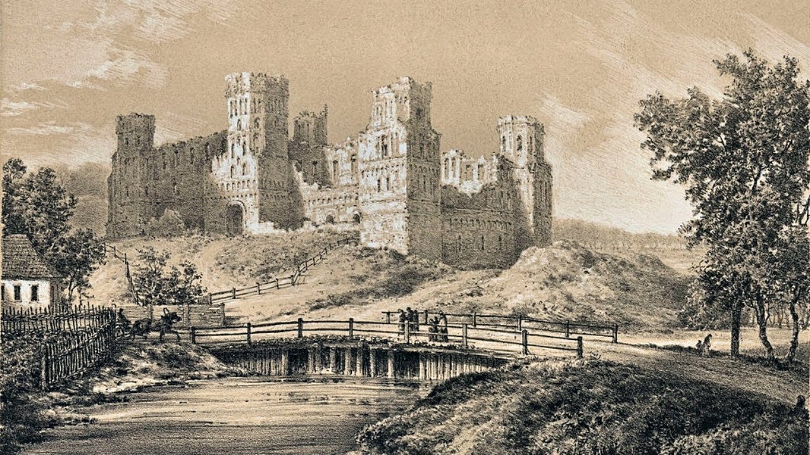
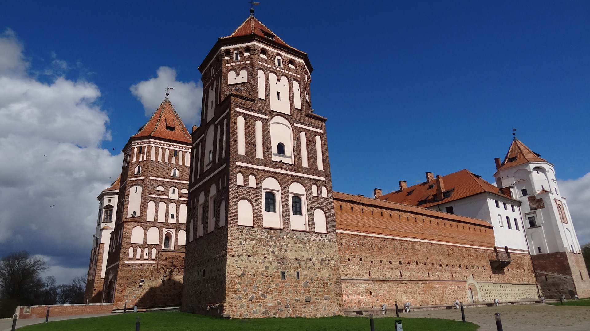
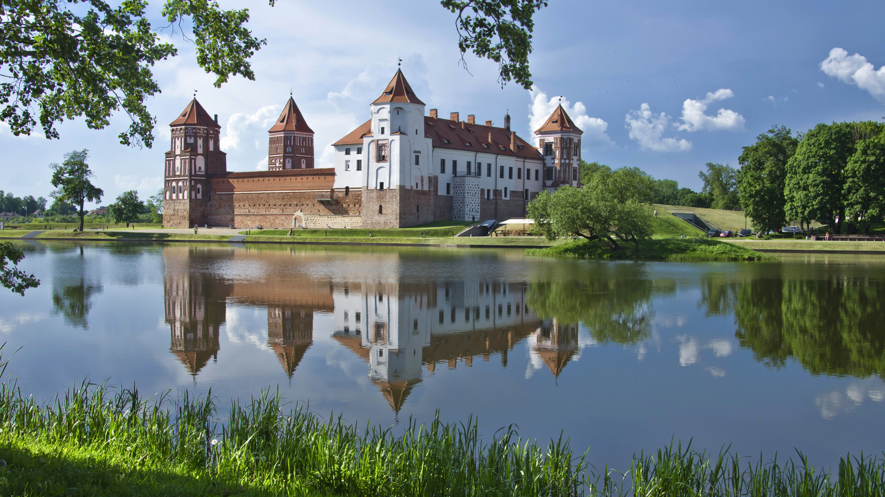

ЛЕГЕНДЫ
Мирский замок.
Легенды и мифы
История замка
По древнему преданию местечко Мир свое название получило от слова «эмир», когда в этом месте находился татарский отряд. Есть и другая версия – пошло название «мир» от рядом проходящей границы Литвы и Руси. Начал строиться сам замок в 16 веке как родовая резиденция маршалка Великого Княжества Литовского – Ильинича Юрия. В самом начале замок представлял собой небольшую квадратную крепость с четырьмя угловыми башнями и пятой башней над въездными воротами.
Крепость в 1569 году перешла к Радзивилу Николаю, одному из князей богатейшего рода, который испросил для себя в Священной Римской империи княжеский титул. Когда замок перешел в руки к Радзивилу, тот развернул уже второй этап строительства. К северной и восточной стенам добавили дворцовый трехэтажный корпус. К данному времени каменное строение перестало играть роль оборонного укрепления и превратилось скорее во дворец. В это же время возле северной стены был заложен красивый парк по европейским образцам замков Версаль, Шенбрунн, Шамбор и Мирабель. Появились также и застекленные оранжереи, где в кадках ютились экзотические растения, которые выносили в сад летом.
Первую половину 17 века можно назвать пиком расцвета замка. Уже со второй половины века начался период разрушения. По земле прокатилась война с Речью Посполитой, с государством Московским, Северная война и затем война 1812 года. Замок разорялся захватчиками неоднократно и даже сами владельцы к нему потеряли интерес и просто сдавали в аренду землю.
Уже в 1891 году замок с имениями был куплен князем Святополком-Мирским, атаманом казачьего Донского Войска. Одной из причин, по которой замок был куплен атаманом, это то, что его фамилия возможно происходит от имени городка. После покупки возле укрепления построили двухэтажный дворец, который, к сожалению, до наших дней не сохранился. Также был основан винокуренный завод.
Сын Михаил после смерти князя в 1920-е годы начал реставрацию замка, завершить которую помешала Великая депрессия двадцатых годов. Уже в Великую Отечественную войну в замке было гетто, после войны в замке стали жить поселковые жители.
Только в 1987 году Мирский замок снова восстановили и открыли уже в качестве Национального художественного музея Республики Беларусь. На теперешний момент Замковый комплекс «Мир» имеет в наличии тридцать девять экспозиций и залов для выставок.
Легенда о тоннеле под землёй
Местная история гласит, что между Несвижским и Мирским замками во времена владения Радзивилов более чем на тридцать километров под землей был прорыт подземный ход, по которому якобы свободно могла проехать запряженная тройкой коней карета. Проводились по этому поводу также многочисленные исследования разного рода. Однако ни облеты на вертолете местности, ни исследования с помощью специального оборудования положительных результатов не дали, и вопрос существования данного туннеля так и остается открытым. Исследователи пока этот туннель не обнаружили.
Легенда о голове быка
По легенде в южную стенку строители замуровали каменную голову быка. Старожилы рассказывают, что рога этой головы были украшены золотым крестом, судьба которого и по сей день неизвестна. Предполагают, что голова была таким своеобразным оберегом от всякого рода напастей, которые могли обрушиться на крепость.
Также считается, что если данную голову из стены достанут, то замок рухнет полностью и уже никогда и никто восстановить его полностью не сможет.
Проклятый сад в Мирском замке
В девятнадцатом веке владелец замка – Святополк-Мирский Николай – отдал приказ о вырубке цветущего сада, находился который со стороны дворца справа. На данном месте князь решил выкопать новое озеро.
Происходило все весной в период бурного цветения яблонь в саду. Народ в то время говорил, что молодые цветущие деревья вырубать большой грех. Люди считали, что тот человек, который срубит дерево в цвету, как будто загубит чью-то молодую жизнь, этот человек будет проклят, и род его преследовать будут постоянные несчастья. Местные жители отказались губить молодой сад наотрез, однако князь на своем приказе настаивал твердо. Князь первый самолично срубил пару деревьев и после этого нанял тех, кто доделал работу до конца.
Народ говорил, что князь тем самым себе и другим рабочим подписал смертный приговор. Как гласит местная легенда, именно после этого несчастья и беды стали настойчиво преследовать хозяев замка одна за другой.
Началась работа по обустройству будущего озера на месте сада. Почти каждый день, как рассказывает легенда, происходили совершенно нелепые и совершенно непредсказуемые несчастные случаи.
Предание утверждает, что во время строительных работ погибло большое количество людей. Среди этих людей оказался и единственный сын местной ведьмы, которая в отчаянии и гневе прокляла озеро словами, в которых говорилось, что с той поры в озере утонет столько же людей, сколько князь загубил цветущих молодых деревьев.
Прошло немного времени и проклятие действительно стало сбываться… Оказалась первой утопленницей Сонечка – юная княгиня. Утонула девочка в озере в свои двенадцать лет. Уже в 1898 году на берегу озера нашли мертвым и самого князя Николая. Их обоих похоронили в местной усыпальнице, которую построили возле замка. Принимать ли на веру эту легенду, личное дело каждого человека. Однако и в наши дни до сих пор почти каждый год тонут в озере люди, в основном мужчины.
По легенде, духи из яблоневого сада превращаются в молодых прекрасных девушек, которые проходящих мимо мужчин заманивают в воду и затягивают их на дно с нечеловеческой силой. По крайней мере именно таким образом в народе объясняют причины того, что тонут в озере в основном мужчины.
Открытым остается только один вопрос – сколько же еще проклятому озеру нужно утопленников, чтобы пополнить до конца то количество яблонь, которые когда-то были в саду замка.
